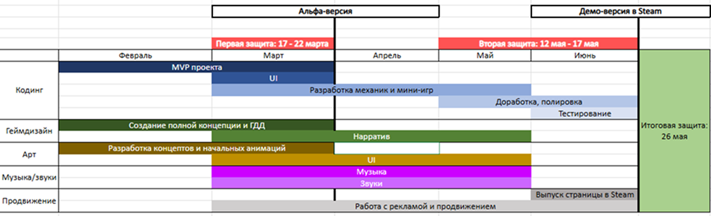

О проекте
Информация
Проект Shiver разрабатывается студентами МосПолитеха 1 курса. Основная задача - создание полноценной 2D игры с уникальной эстетикой и продуманным геймплеем в рамках учебного процесса. Партнером проекта выступила ООО "Ратибор".
Цель и задачи проекта
Цель - создание качественного игрового продукта и его публикация на игровые платформы (Steam/VK Play).
Задачи:
- разработка полной концепции игры до 1 марта;
- создание MVP проекта до 22 марта;
- разработка персонажей и level-дизайн комнат до 24 мая;
- написание музыки и запись всех необходимых звуков до 25 мая;
- тестирование игры на наличие багов и ошибок до 25 мая и защита проекта 26 мая;
Этапы работы над проектом
1. Подготовительный этап
Февраль 2025 - разработка концепции, создание технического задания, формирование команды, распределение ролей.
2. Пре-продакшн
Февраль - Март 2024 - создание прототипов, концепт-артов, проектирование игровых механик.
3. Основная разработка
Март - Апрель 2025 - программирование, создание артов, написание сценария, первая аттестация проекта.
4. Тестирование и полировка
Апрель - Май 2025 - отладка, исправление багов, доработки, работа со звуком, вторая аттестация проекта.
5. Релиз и презентация
Май 2025 - подготовка финальной версии, публикация, итоговая защита проекта.
Диаграмма Ганта
Подробный хронологический план работы с распределением процессов по временным отрезкам:
